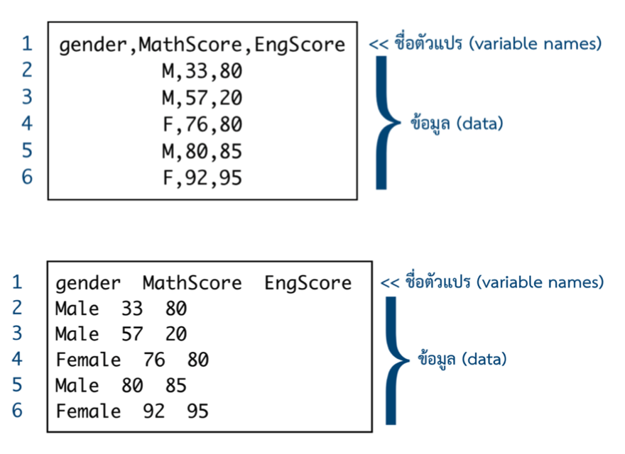

# R syntax
dat <- read.csv("gapminder_mini.csv", header = TRUE)
str(dat)ตอนที่ 4.1 การนำเข้าและเขียนชุดข้อมูล (importing and writing data)
การนำเข้าข้อมูลถือได้ว่าเป็นขั้นตอนแรกของการดำเนินงานวิเคราะห์ข้อมูล ในบทเรียนนี้จะกล่าวถึงการนำเข้าข้อมูลลักษณะต่าง ๆ ในภาษา R และ Python รวมทั้งการเขียนชุดข้อมูลเป็นไฟล์ข้อมูลเพื่อนำไปใช้ตามวัตถุประสงค์ต่าง ๆ รายละเอียดมีดังนี้
เรื่องที่ 4.1.1 การนำเข้าข้อมูลประเภท flat file
flat files เป็นไฟล์ข้อมูลที่อยู่ในรูปแบบข้อความ (plain text) และชุดข้อมูลไม่ได้มีโครงสร้างการจัดเก็บในรูปแบบตารางหรือ spreadsheet แต่ flat file จะมีการใช้ตัวอักษรพิเศษ เช่น comma (,), slash (/) หรือ underscore (_) เป็นตัวคั่น (separator or delimiter) เพื่อจำแนกข้อมูลที่แตกต่างกันออกจากกัน รูป 4.1 แสดงลักษณะของชุดข้อมูลแบบ flat file ที่มีการใช้ตัวคั่นแบบ comma (,) และแบบเว้นวรรค (tab) จากรูปจะเห็นว่าตัวอย่างของไฟล์ข้อมูลทั้งสองมีโครงสร้างการจัดเก็บข้อมูลที่เหมือนกันกล่าวคือ ในแถวแรกของไฟล์ข้อมูลเป็นที่จัดเก็บชื่อของตัวแปรภายในชุดข้อมูล และตั้งแต่แถวที่สองเป็นต้นไปเป็นที่จัดเก็บข้อมูลของตัวแปรต่าง ๆ ของแต่ละหน่วยข้อมูล อย่างไรก็ตามในทางปฏิบัติแถวแรกของไฟล์ข้อมูลไม่จำเป็นจะต้องเป็นชื่อของตัวแปรเสมอไป

ที่มา : สิวะโชติ ศรีสุทธิยากร (2564)
flat file ยังมีการเรียกชื่อที่เฉพาะตามลักษณะของตัวคั่นที่ใช้ในชุดข้อมูล จากรูปจะเห็นว่าชุดข้อมูลด้านบนมีการใช้ comma (,) เป็นตัวคั่น จะเรียกไฟล์ข้อมูลประเภทนี้ว่า comma separated values (CSV) หรืออาจเรียกว่า comma-delimited ก็ได้ ส่วนชุดข้อมูลด้านล่างของรูปมีการใช้ตัวคั่นเป็นการเว้นวรรค (tab) จะเรียกชุดข้อมูลประเภทนี้ว่า tab separated values (TSV) หรือ tab-delimited
การนำเข้าและเขียนไฟล์แบบ CSV
ภาษา R สามารถนำเข้าและเขียนไฟล์ CSV ได้หลายวิธี วิธีการแรกเป็นการนำเข้าด้วยฟังก์ชันจาก package-utils ที่เป็น package พื้นฐานของ R ได้แก่ฟังก์ชัน read.csv() ที่มีอาร์กิวเมนท์สำคัญได้แก่ file ใช้ระบุที่อยู่และชื่อของไฟล์ข้อมูลแบบ CSV ที่ต้องการนำเข้าอาร์กิวเมนท์นี้ผู้วิเคราะห์จำเป็นต้องกำหนดแบบตัวแปรตัวอักษร (กล่าวคือต้องระบุไว้ภายใต้เครื่องหมาย quotation) อาร์กิวเมนท์ header ใช้ระบุว่าไฟล์ข้อมูลที่นำเข้ามีแถวแรกของไฟล์เป็นชื่อของตัวแปรหรือไม่ การกำหนดอาร์กิวเมนท์นี้กำหนดเป็นค่าความจริงได้แก่ TRUE หรือ FALSE โดยหากกำหนดเป็น TRUE (ค่าเริ่มต้น) จะหมายถึงการระบุว่าใช้แถวแรกของไฟล์ข้อมูลเป็นชื่อของตัวแปรในแต่ละคอลัมน์ ในกรณีที่กำหนดเป็น FALSE ฟังก์ชัน CSV จะกำหนดชื่อของคอลัมน์ให้โดยอัตโนมัติ ตัวอย่างด้านล่างแสดงการนำเข้าชุดข้อมูล gapminder_mini.csv
'data.frame': 142 obs. of 4 variables:
$ X : int 1 2 3 4 5 6 7 8 9 10 ...
$ country : chr "Afghanistan" "Albania" "Algeria" "Angola" ...
$ gdpPercap: num 975 5937 6223 4797 12779 ...
$ lifeExp : num 43.8 76.4 72.3 42.7 75.3 ...อาร์กิวเมนท์อีกตัวที่สำคัญของฟังก์ชัน read.csv() คืออาร์กิวเมนท์ na.strings ใช้ในกรณีที่ชุดข้อมูลที่ต้องการนำเข้ามีค่าสูญหาย การระบุอาร์กิวเมนท์ดังกล่าวให้ระบุเป็นสัญลักษณ์ที่ใช้แทนค่าสูญหายของชุดข้อมูลที่ต้องการนำเข้า เช่น หากชุดข้อมูลที่นำเข้าใช้สัญลักษณ์ -999 แทนค่าสูญหายให้กำหนด na.strings = -999 เป็นต้น นอกจากนี้ฟังก์ชัน read.csv() ยังมีอาร์กิวเมนท์ stringsAsFactors ที่กำหนดค่าเป็น TRUE หรือ FALSE เพื่อแปลงคอลัมน์ตัวอักษรในชุดข้อมูลให้เป็นตัวแปรแบบ factor ซึ่งเป็นตัวแปรแบบจัดประเภทของ R ผู้อ่านสามารถศึกษารายละเอียดเพิ่มเติมได้จาก สิวะโชติ ศรีสุทธิยากร (2564) หน้า 40
ภาษา R ยังมีความสามารถในการเขียนไฟล์ชุดข้อมูลเพื่อส่งออกไปบันทึกในคอมพิวเตอร์สำหรับนำไปใช้ในวัตถุประสงค์ต่าง ๆ การเขียนไฟล์แบบ CSV สามารถทำได้หลายวิธีการเช่นกัน วิธีการพื้นฐานคือการใช้ฟังก์ชัน write.csv() ที่มีอาร์กิวเมนท์สำคัญ 2 ตัวได้แก่ x คือชุดข้อมูลแบบ Dataframe ที่ต้องการเขียนออกไปเป็นไฟล์แบบ CSV และ file ใช้ระบุที่อยู่และชื่อของไฟล์ปลายทางที่จะให้ R เขียนออกไปบันทึกในคอมพิวเตอร์ ทั้งนี้รูปแบบของชื่อไฟล์ต้องเขียนในลักษณะตัวอักษรกล่าวคืออยู่ภายใต้เครื่องหมาย quotation และมีนามสกุลของไฟล์เป็นแบบ `*.csv` ดังตัวอย่างด้านล่าง
# R syntax
write.csv(dat, file="Desktop/mydata.csv")คำสั่งด้านบนจะเขียนไฟล์ my.data.csv ไว้บน Desktop ของเครื่องคอมพิวเตอร์ ในกรณีที่ผู้วิเคราะห์กำหนดแค่ชื่อไฟล์ปลายทางแต่ไม่ได้กำหนดที่อยู่ของไฟล์ เช่น write.csv(dat, file="mydata.csv") ไฟล์ที่สร้างขึ้นจะบันทึกไว้ใน folder เป็นค่าเริ่มต้นหรือ folder ที่กำหนดเป็น working directory เอาไว้ การกำหนด working directory สามารถทำได้โดยใช้ฟังก์ชัน setwd() โดยภายในฟังก์ชันให้ใส่ที่อยู่ของ folder ที่ต้องการกำหนดให้เป็น working directory ในลักษณะตัวอักษร เช่น setwd("/Desktop/myjob") หมายถึงกำหนดให้ working directory เป็น folder myjob ที่อยู่บน Desktop ของเครื่องคอมพิวเตอร์
สำหรับการนำเข้าและเขียนไฟล์ข้อมูลแบบ CSV ด้วยภาษา Python สามารถทำได้โดยใช้ฟังก์ชัน pd.read_csv() ของ pandas library ฟังก์ชันนี้มีพารามิเตอร์ได้แก่ filepath ใช้กำหนดที่อยู่และชื่อของไฟล์ที่ต้องการนำเข้า พารามิเตอร์ sep สำหรับระบุตัวอักษรที่ใช้เป็นตัวคั่นในชุดข้อมูล ซึ่งในกรณีนี้จะกำหนดให้ sep="," เพื่อนำเข้าชุดข้อมูลแบบ CSV พารามิเตอร์ header สำหรับระบุว่าแถวที่เท่าไหร่ในตารางข้อมูลจะใช้เป็นชื่อของตัวแปร (เริ่มจาก 0) พารามิเตอร์ skiprows ใช้กำหนดให้ Python อ่านไฟล์ข้อมูลโดยข้ามแถวไปจำนวนเท่ากับที่กำหนด พารามิเตอร์นี้มีประโยชน์มากสำหรับการนำเข้าไฟล์ข้อมูลจากองค์กร หรือ logfile ที่หัวของตารางมักมีคำอธิบายหรือ caption ต่าง ๆ ก่อนที่จะเป็นส่วนของตารางข้อมูล ฟังก์ชัน pd.read_csv() ยังมีพารามิเตอร์อีกหลายตัว (optional parameters) ที่สามารถกำหนดเพื่อปรับแต่งลักษณะของข้อมูลที่นำเข้ามาได้ รายละเอียดอื่น ๆ ผู้อ่านสามารถศึกษาเพิ่มเติมได้จาก https://pandas.pydata.org/docs/reference/api/pandas.read_csv.html
# Python syntax
import pandas as pd
dat = pd.read_csv("/Users/siwachoat/Downloads/gapminder.csv", header=0)
dat Unnamed: 0 country gdpPercap lifeExp
0 1 Afghanistan 974.580338 43.828
1 2 Albania 5937.029526 76.423
2 3 Algeria 6223.367465 72.301
3 4 Angola 4797.231267 42.731
4 5 Argentina 12779.379640 75.320
.. ... ... ... ...
137 138 Vietnam 2441.576404 74.249
138 139 West Bank and Gaza 3025.349798 73.422
139 140 Yemen, Rep. 2280.769906 62.698
140 141 Zambia 1271.211593 42.384
141 142 Zimbabwe 469.709298 43.487
[142 rows x 4 columns]